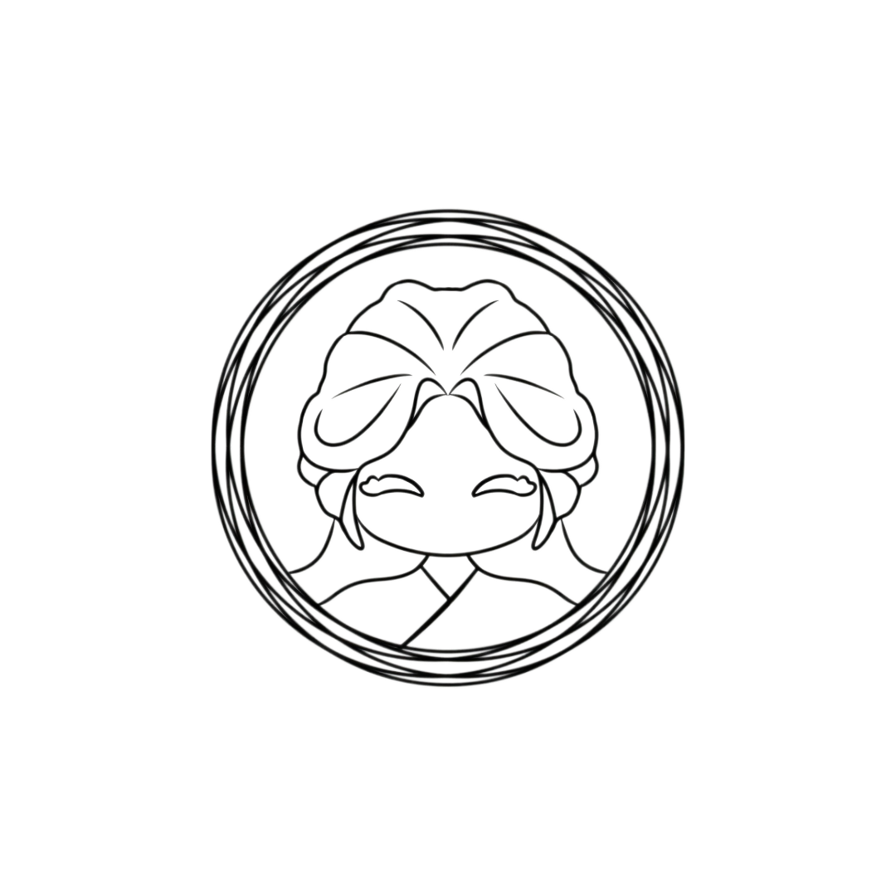
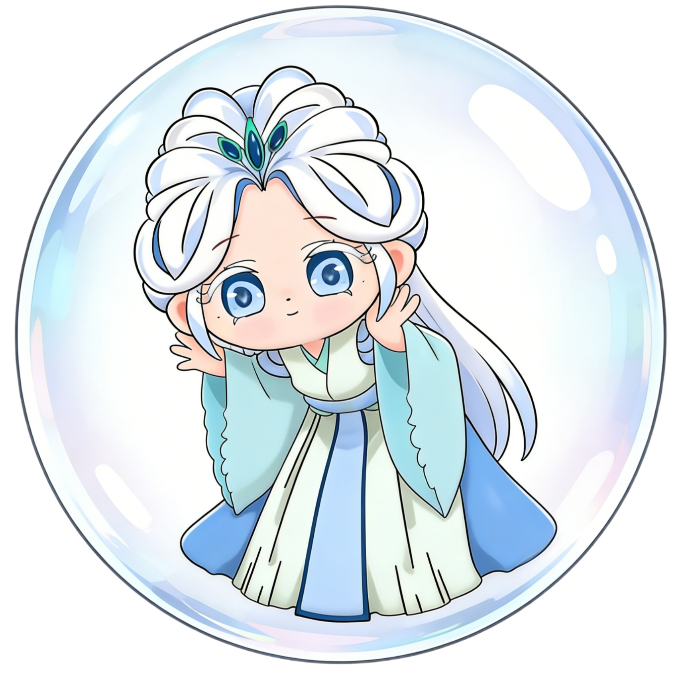

通草堆话通草堆画是中国独有的传统手工立体工艺画，作为国家级非物质文化遗产代表性项目，被誉为“东方立体工笔艺术”。 它以“无刀而有雕、无针而有绣”的独特表现方式，将工笔的细腻与浮雕的层次巧妙结合，形成轻盈、雅致又富有立体感的艺术风格。 其工艺可追溯至清代，早期在贵州、湖南、四川等通草主产区较为流行，最初多用于民间装饰、节庆祭祀供品与头饰配饰等生活场景。 随着工艺成熟与审美提升，通草堆画逐渐发展为厅堂陈设、礼赠收藏与文化展示的重要形式，成为体现东方匠心与中式美学的文化符号。
通草堆画的核心原料为通草（通脱木的髓部），是一种兼具中药材属性与工艺价值的传统材料。 通草质地洁白轻盈、细腻柔软，纹理自然通透，吸水性强，易塑形、易染色，能表现花瓣、羽毛等微妙起伏与层次。 成品温润如玉，自带柔和光泽，且不易虫蛀，使其在同类材料中具有不可替代的优势。 正因其“轻、薄、透、柔”的材料特性，通草堆画才能呈现独特的空灵感与立体浮雕效果。
通草堆画全程依赖纯手工制作，无法机器量产，工序复杂且对经验要求极高。 一般需经过选料、切片、剪裁塑形、堆叠粘贴、手工染色、装裱成型等多道步骤。 其中，“堆”是最核心、最具辨识度的技艺：匠人按层次由底到高逐层堆贴，使花鸟枝叶呈现自然起伏与空间关系， 再通过刀尖细修纹理与弧度，让羽毛的轻、花瓣的软、枝叶的转折更真实生动。 最终作品兼具绘画的意境、浮雕的层次与雕刻的精细。
通草堆画题材典雅，多取自吉祥花鸟、古典山水、历史人物与传统纹样， 传递出中国人“天人合一、清雅内敛”的审美追求。 每件作品均为匠人手工制作，难以完全复刻，因而独一无二； 其价值不仅在观赏与收藏，更承载古法工艺的传承使命。 作为传统文化传播与文旅融合的重要载体，通草堆画正以更亲近大众的方式走入当代生活， 推动非遗从“被看见”走向“被理解、被体验、被喜爱”。
